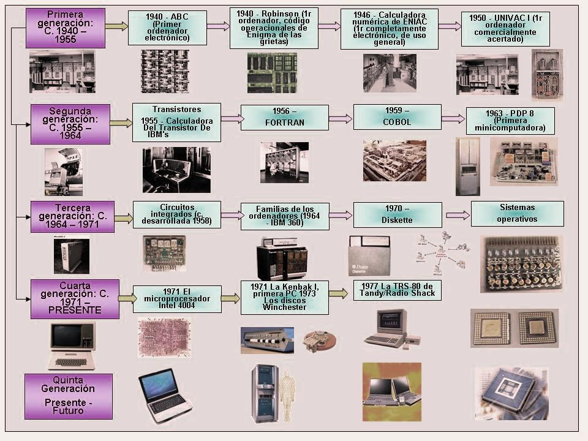

La interfaz de usuario, Interacción Humano Ordenador
LINEA DE TIEMPO

TOMADO DE: Logística 360. 2021. Logística 360 | Efectiva logística de producción: Interacción entre el humano y la computadora. [online] Available at: http://www.logistica360.pe/efectiva-logistica-de-produccion-interaccion-entre-el-humano-y-la-computadora/
TOMADO DE: Youtube. 2021. Before you continue to YouTube. [online] Available at: https://youtu.be/wJRpJKWBKDc